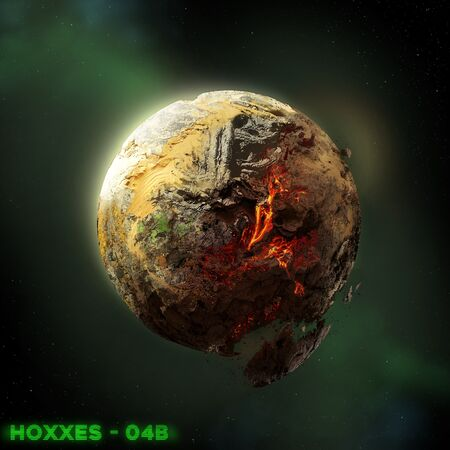

Aquí puede volver a la página principal.
¿Cuál es el atractivo de este planeta en particular para la compañía de Deep Rock Galactic?
Los recursos naturales del mismo son invaluables. Desde oro, jadiz, perlas y hasta extrañas reliquias como cubos erróneos, llamados ERR://23¤Y%/ por la compañía.
Todo esto viene a un precio sin embargo, ya que los minerales encontrados varían dependiendo de qué zona del planeta se aterrize para excavar,
cada entorno teniendo sus propias amenazas exclusivas que lo diferencian uno de otros.
Los mineros enanos son enviados constantemente en cortas expediciones, de usualmente diez minutos a una hora, para recoger una serie de recursos para la compañía y abandonar lo antes posible entonces.
Los diferentes biomas descubiertos
Hasta ahora, el juego dispone de hasta diez áreas jugables, cada uno con sus características distintas de las que hablaremos brevemente.
| Nombre | Dificultad | Descripción |
|---|---|---|
| Cavernas Cristalinas | Media | Enormes cristales y corredores pequeños, además de peligrosos cristales eléctricos. |
| Biozona Densa | Fácil | Enormes cavernas oscuras con formaciones de coral y que esconden grandes riquezas. |
| Ciénagas Fúngicas | Media | Vegetación hasta donde las vista alcanza, cubierto en champiñones gigantes y esporas venenosas. |
| Estratos Glaciales | Media | El lugar más frío del planeta, en el que cualquier enano puede quedarse atrapado congelado si no se anda con cuidado. |
| Núcleo de Magma | Difícil | El segundo entorno más hostil del planeta, donde pozos de lava en constante erupción llenan el suelo, además de constantes grietas abriendose en el suelo. |
| Zona de Exclusión Radiactiva | Fácil | En este entorno, los aliens están contanimados con radiación, y muchos han mutado para ser más rápidos y peligrosos. |
| Pozos de Sal | Media | Cavernas masivas con agujeros muy profundos, donde los enanos deben tener cuidado de donde pisan para no caer a su desgracia por accidente. |
| Pasillos erosionados | Media | Como su nombre indica, este entorno es mucho más cerrado, dando una sensación de claustrofobia mayor, y menos espacio al que escaparse en caso de problemas. |
| Lumicavernas Azúreas | Media | Un lugar lleno de luces, plantas y estética de ensueño, aunque al final sigue siendo un hervidero de criaturas buscando acabar con los intrusos. |
| Árboles Huecos | Difícil | Posiblemente el peor lugar donde querrías trabajar. Dentro de un enorme arbol muerto, plantas parasíticas invaden el lugar, y no hay que decir que atacaran a los enanos sin dudar. |